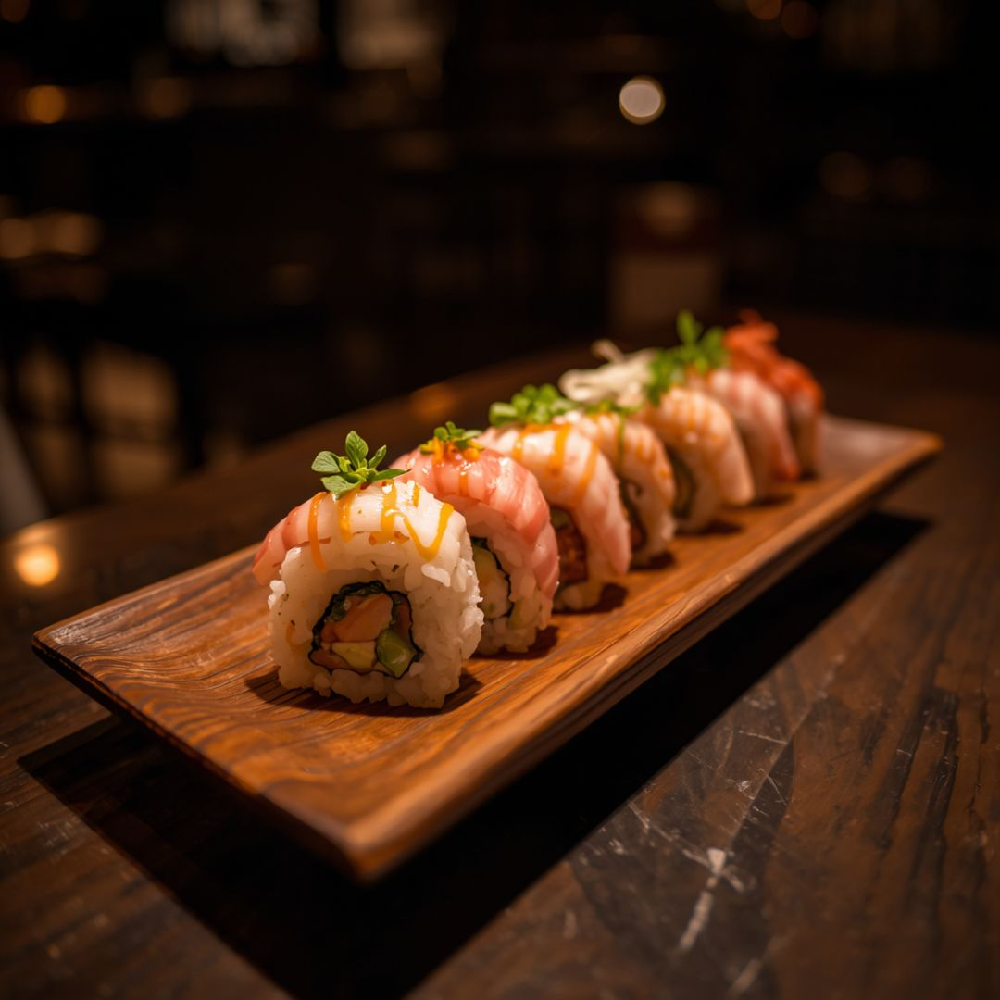

Sushi

Sushi is a traditional Japanese dish made with vinegared rice, fresh fish, and vegetables. Whether you're a beginner or a sushi lover, this recipe will guide you through making delicious sushi rolls at home.
Ingredients (serves 2)
- 300g sushi rice
- 350ml water
- 3 tbsp rice vinegar
- 200g salmon or tuna
- 4 nori sheets
- ½ cucumber
- 1 avocado
- Soy sauce, wasabi
Instructions
- Rinse the sushi rice until the water runs clear.
- Cook the rice with 350ml water. Let it cool slightly.
- Mix the rice vinegar through the rice and let it cool completely.
- Cut the salmon, cucumber and avocado into thin strips.
- Place a nori sheet on a bamboo mat, spread a thin layer of rice on top.
- Place the fillings on the edge of the rice.
- Roll tightly using the bamboo mat and press firmly.
- Cut into slices with a sharp wet knife.
- Serve with soy sauce and wasabi.
Home